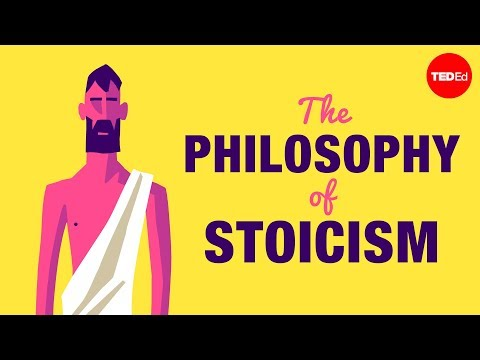

What the Stoics Got Right. And Wrong.
Massimo Pigliucci's TED-Ed Inquiry, Modern Psychological Critiques, and Relative Clauses of Proportion (some of which / many of which).
🏛️ Warm-Up: Stoic Propositions
Stage 01 • Active VoiceExamine each proposition below. Are they authentic Stoic principles, or modern caricatures?
-
1. The Stoics believed that the practice of virtue is enough to achieve a well-lived life.True: To the ancient Stoics, virtue (wisdom, courage, justice, and temperance) was the sole intrinsic good and sufficient for eudaimonia (human flourishing).
-
2. Stoics are emotionless.False (The "Lower-Case stoic" Myth): Ancient Stoics sought freedom from destructive passions (pathe such as wrath, panic, and despair), not emotional obliteration. They actively cultivated positive states like joy (chara) and tranquility (ataraxia).
-
3. Stoicism is pessimistic.False: Techniques like praemeditatio malorum (premeditating adversity) are psychological inoculations against surprise, not defeatist surrender.
-
4. The Stoics emphasized ethics as the main focus of human knowledge.True: While Stoics divided philosophy into Logic, Physics, and Ethics (the fertile garden), Logic was the protective fence, Physics was the fertile soil, and practical Ethics was the nourishing fruit.
-
5. The Stoics proposed that knowledge can be attained through the use of reason.True: The Stoic logos held that the universe is rational and that human beings align with nature by exercising disciplined, rational assent over irrational impulse.
📺 Video & Thematic Inquiry: Massimo Pigliucci
Stage 02 • TED-Ed
▶ Launch TED-Ed Video (05:27)Debate Challenges
- Q1 What do you think about Stoicism? Does it have a genuine place in contemporary high-tech society, or is it an outdated coping mechanism?
- Q2 What are the potential psychological limitations of a strictly Stoic mindset when navigating high-friction team environments?
- Q3 Would you consider yourself "Stoic" under pressure in engineering or crisis scenarios? Where do you draw the line?
- Q4 How would you describe your attitude towards philosophy in general—indispensable framework or academic indulgence?
📐 C1 Grammar Blueprint: Relative Clauses of Proportion
Stage 03 • Structural Mastery
Key Rule: Some of which and many of which introduce non-defining relative clauses modifying a subset of a previously mentioned plural noun or collective entity.
• Mandatory Punctuation: Always preceded by a comma. Writing a semicolon or full stop without a subject creates a sentence fragment; omitting the comma produces a run-on.
• Subsets vs Majorities: Use some of which for limited subsets, and many of which for larger, statistically significant proportions.
some of which — refers to a focused selection of the fundamental principles.
many of which — emphasizes that a large proportion of modern accounts stress practical therapy and self-help.
some of which — reflects the preserved survival of a small, selective fraction of the corpus (e.g. Epictetus, Seneca, Marcus Aurelius).
some of which — aligns with "a select few concepts".
many of which — highlights that a broad proportion of contemporary offshoots (e.g. CBT, REBT, mindfulness) draw from Stoic roots.
🃏 Pick a Card: Metaphorical Visual Stimuli
Stage 04 • Image-Driven DebateSelect an image below and deconstruct its philosophical and psychological implications.
Heart vs. Brain Balance
A walking silhouette carries a balance scale suspended from a shoulder yoke, weighing a living anatomical heart against a exposed brain.
The Mechanised Mind & Mortality
An intricate profile of a skull fused with gears, clockwork, and an embryonic figure nestled in the temple, puffing pipe smoke that turns into butterflies.
The Scholar's Radiant Inquiry
A classical bearded sage with spectacles closely studies an ancient leather tome, from whose pages a glowing question mark radiates ethereal light.
Cognitive Overload
The interior of a human head constructed entirely of thousands of overlapping bureaucratic paper notes, while a solitary tiny person stands inside looking upward.
The Fertile Idea
Inside a quiet silhouette, a glowing electric lightbulb takes root in neural soil, sprouting vibrant green leaves and living branches.
The Ancient & The Fleeting
A towering classical Greek philosopher carved from stone sits on a seaside pedestal, observing a young boy absorbed in building a delicate sandcastle.
📖 Critical Reading: What the Stoics Got Wrong
Stage 05 • Analytical TextStoicism, an ancient philosophy that has seen a remarkable resurgence in recent years, has faced various criticisms, some of which challenge its relevance and application in the contemporary world. Critics point out that Stoicism's emphasis on emotional control can lead to the suppression of healthy emotional expression, a concern that many mental health professionals share. This aspect of Stoicism, which encourages individuals to maintain an unyielding calm in the face of adversity, raises difficult questions regarding the potential neglect of emotional well-being and visceral self-awareness.
Moreover, the Stoic ideal of self-sufficiency is frequently criticized as being out of touch with the realities of modern life, where individuals often find strength, meaning, and psychological growth through their relationships and communities. This dimension of Stoic doctrine, which many interpret as a call for radical emotional and practical independence, seems to overlook the immense benefits of mutual vulnerability, collective support, and structural interdependence that characterise contemporary society.
Additionally, Stoicism's insistence on accepting things as they are—perceived by many as a refined form of passive resignation—remains a major point of contention. Critics argue that this principle might discourage individuals from actively confronting injustices or striving for aggressive societal transformation. A philosophy that teaches acceptance of one's given circumstances is often seen as fundamentally at odds with the dynamic nature of 21st-century progress, where institutional reform and boundary-pushing are non-negotiable goals.
Furthermore, Stoicism's approach to desire and ambition continues to spark debate. While classical Stoics advocate for a life liberated from irrational desires and agitating ambitions, modern observers point out that this can easily precipitate a deficit of motivation and an inability to harness the positive, transformative power of ambition—the very force propelling scientific, artistic, and technological breakthroughs.
C1/C2 Deconstruction Questions
- 1 How does the Stoic dichotomy of control align or clash with modern psychological theories on trauma and emotional expression?
- 2 Considering how distributed and interdependent modern systems are, how feasible is the Stoic ideal of the self-sufficient sage?
- 3 At what point does "accepting what is beyond your control" deteriorate into passive complicity with systemic injustice?
- 4 Can high ambition and relentless drive coexist with Stoic equanimity, or is tension between them inevitable?
- 5 If you were to adapt Stoic principles for modern AI researchers and systems architects, what would you discard first?